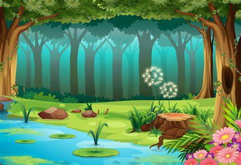

The 3 fruits and blender
A long long long time ago before humans were alive and nonliving things were able to talk, there lived a blender. The blender wanted to blend Pear,Apple and if he was very very very lucky Orange.
Later in the kitchen Pear wants to check how the coffee machine works,but he bumps into the blender. The blender turns on his blades and said “ I’ll spin and spin and blend you all up”.Pear says “Not by the leaf of my stemy stem stem”. Pear tries throwing some paper to defend himself, but blender blends it all up. Then he picks up Pear and blends him all up.
After some time,Apple gets worried and goes to check if Pears ok. But he bumps into the Blender.
Then Blender turns on his blades and says “ I’ll spin and spin and blend you all up.” Apple says “not by the leaves of my stemy stem stem.” Apple tries throwing some foam but blender blends it all up then he picks up Apple and blends him until he becomes applesauce.
Soon after, Blender walks through the kitchen and looks for Orange. He looked and looked and looked and looked until he finally found Orange.

He turns on his blades then he grabs Orange. He’s about to blend him, but Orange says “Look there’s a big fruit behind you.” “Really” says Blender. He drops Orange. He turns his head. When he turns his head nothing is there. When he looks back orange is gone.
Blender looked and looked and looked and looked and looked for Orange. He almost gave up. He finally saw Orange next to the backyard door. Blender thought, “Why does he have that rock.”
Blender turns on his blades. He said I'll spin and spin and blend you all up.” Orange says “Not by the leaf of my stemy stem stem.” Then Orange threw his rock at Blender.
The rock got caught in the blades of the Blender. He exploded and Orange lived happily ever after blender free.
Surviving
It was a bright day in Basketville and Addy woke up. He was surprised he was in the middle of a forest. Then he remembered that he went camping with his dad but he was still confused. He thought, Why am I lying in the middle of the forest?
Addy thought and thought. He finally remembered that he went to get firewood. He couldn’t find any so he went farther into the forest . He thought I think I would've got lost. His Eyes became watery and his legs were shaky. he shouted “why!!!!!!!!”. After a few minutes he decided he should make some shelter. he made a shelter made out of sticks and branches in the inside there are leaves for a bed and outside a campfire.

Addy was sitting on his makeshift bed. Then suddenly his stomach started growling. He remembered something. Oh no I forget about the food. He decided he should go fishing. When he got at the lake he thought know what should I use for catching fish.
Suddenly an idea popped into his head. He ran into the forest to get a stick he grabbed a stick and went to get a worm. He thought maybe I should look near the lake. And he was right there were tons of worms there.
He thought that's a lot of worms. He got a worm he tried sticking it on the stick but each time he did
the worm split in half so Addy thought I need to think of a better way. He thought I need a new plan.
Chapter Three
He went looking around in the forest for something to use. He was looking in the forest he saw a piece of string he cheered “YES.” I Can use that for fishing he went back to lake he tied the worm to the string and put in the water and waited after a few minutes something pulled on the fishing rod he pulled the rod out and there was a giant fish! It was the size of a desk he thought this will last me for days. After a few days later he was in his bed then suddenly he heard something loud go drrrrrrrrrrrrrrrrr he thought what on earth is that. He went outside his hut outside there was a giant helicopter. He saw a man waving him then he realized it was dad he ran in the helicopter and said Addy cried “ What took you so long ?” his dad answers “It took time to find a place to buy a helicopter.” Addy said he said ”Oh im just happy your here. ” then they flew all the way home.
Bad Name
Stewerd was nervous for the first day of kindergarten because of his name. He was feeling sweaty. He felt like he never wanted to go to school. He got to school. He walked inside then started going to the classroom. He walked slowly to the classroom thinking “I wonder if my new class will like my name” he stopped by the water fountain so he could calm down. “I think I can change my name before I get to class and trick everybody”. But he didn't want to tell a lie.
In the meantime stewerd walked inside the classroom nervously. He put his stuff on his chair then he saw his name tag then he thought “oh no now everybody will know my name.” He covered his name tag so nobody would see it. After some time his teacher Miss. Toad said “please put away your backpack and sign in your star that has your name.”
So Stewerd signed in his star that had his name.Then after that he put away his stuff and after that Miss.Toad said “please check where your name is at the chart for your job.” So stewerd checked his job then went down for morning meeting. Stewerd was at morning meeting first they shared about there summer and what they did . Soon after Mrs. Toad said it was time to say what your name was. “Oh no Stewerd thought I forgot about my name since I had so much fun.” Soon the teacher Mrs. toad says “please say your name to everybody.”
Meanwhile Stewerd thought and thought should I say my name or not he didn't know what to say then a different student said his name“then stewerd thought his name is just as weird as my name.”He felt better “ he said to himself im going to say my name.”
Just then Stewerd said his name was Stewerd nobody said a word. Stewerd was surprised nobody said a word nobody laughed he was very surprised. “I was wrong the whole time Stewerd thought nobody was making fun of me at all.” Stewerd was happy. Later at lunch stewerd sat at a table one student named Carter asked “what's your name”. “ Stewerd” stewerd answerd .” “ Nice name” said Carter .“Thanks” said Stewerd.
The Broken
Jack has always wondered if he ever met his Dad's high expectations. He was dribbling the ball and heading toward the goal. He was heading toward the goal, but then an image of his father popped into his head and he blanked; that was it; the game was over. Not only that, but he had lost the game; he felt as if he was broken. The wind was breezing toward his face. His ears were a shade of burning red. His reaction was as if the world had ended. It was, according to his dad. His father used to play soccer in his childhood, and he was an all-star at it. He was Ronaldo in his prime. His father has received medals and was going to go professional…, but he had a horrible accident. Not only that, but he had got a permanent limp and sadly had to quit soccer. Jack has no hate for soccer, but it has never been a thing he wanted to do. He has tried to convince his parents that he could not play soccer, but they have never let him. He wanted to go into the robotics and engineering path, not sports. His parents never understood and believed that soccer was in his genes. He has never told them engineering was the reason and always made excuses for why he wanted to quit. He and his mom have a decent relationship, but he and his father never bonded. Their relationship was like a dog and a cat. Jack sincerely wants to quit soccer with his heart. He is new to middle school, and he is 12 years old. Jack lives in Cambridge, Massachusetts. He has never really had any friends because soccer engulfed his social life. Likewise, he thought his life couldn't get any worse till his parents told him to join the school team for soccer. Jack was resting on his bed and was throwing a soccer ball up and down. He was thinking if his father was really mad because he had not spoken to him for three hours since the game. The thought of joining the school soccer team and letting it down during the game made him want to be plaintive. He desired to tell his dad how he felt about his love for engineering, but Jack was scared of how he would react. Jack knew that his dad was a nice guy, but when it comes to soccer his dad goes a bit overboard. He decided that this had to be a secret. It was a Sunday night, and Jack's dad was thinking about his youth. He imagined a soccer ball flying through his mind. His thoughts got disturbed when he saw his wife walking towards him. She asked him, “weren't you a bit hard on Jack today?” He quietly replied and answered, “I want him to do his best, no son of mine could be missing easy points!” The wife walked away as she knew there was no way of convincing her husband. She walked upstairs and walked to Jack's room. She noticed that Jack was sleeping, so she decided not to bother him. His mother tucked him up and went to her room. At this time she knew little of what was to come with Jack's school soccer team. Jack started walking to the bus, and he waved goodbye to his mom and dad. He double-checked and made sure to bring clothes and cleats. He clambered up the stairs and got in a seat. Jack sat alone since was always occupied hanging out with someone. Once he arrived at the school he headed to the locker room where was dropping off his gear when he saw some soccer kids. He had thought he had a decent height for his age, but when he saw these kids they looked like giants compared to him. They walked out of the locker room and Jack looked with fright. He thought this was going to be the same type of kid as when he was on his dad’s team, but now he shivered and trembled.
Jack continued with his school day trying not to think much about soccer. Despite not trying to focus on it always found a way to come back into his mind. He was getting stressed about the practice after school. The seventh bell had just rung, and he headed to the locker room and started changing. He headed out and went to the field. The breeze was light but very cool on a sunny day. He started practicing with the team and his coach told him he had a soccer game on Thursday. Once practice ended He knew that he would not be able to do this for a whole season. He knew it was time to tell his dad the reason why he wanted to quit soccer. He decided to walk home and opened the door when he reached it. Jack’s dad had been sitting in the living room reading a newspaper when he looked up, he saw Jack. He asked, “How was practice?” Jack told him it was good, but he told him he needed to tell him something very important. His dad got into a comfortable position and started to listen. Jack told him everything and his love for engineering and how he wanted to take classes for it. Even after Jack told him everything his dad acted as if he didn’t hear a word. He asked his dad if he was okay with this. He responded, “If you think you can quit soccer you are mistaken.” Once Jack heard those words it shattered his heart to pieces, and he stormed upstairs. He picked up his soccer ball and threw it across his room, and then he went to sleep. Jack started turning and trembling as he was trying to sleep. He started to dream about his 3rd-grade science fair. Jack made a working robotic car and Jack was very proud of it. He got first place and his heart felt an explosion of happiness. He knew from then on that he wanted to make a new project that none had ever seen. That was till his father told him to get started with soccer. He hated his dad and he knew that he would keep on building. Jack has made several projects, and he has been a continuous winner in many competitions. Jack had wanted to continue this journey, but his dad stopped it. It was Thursday afternoon, and Jack was ready for the game. After 3 days of hard work with the team and his dad, he was ready. Jack walked out to the field and when Jack thought the kids on his team were tall, when Jack saw their team Jack nearly fainted. He tramped onto the field, and he was ready to play. The game started, and his team got an early lead of two points, one of which he scored. The game continued and the other team managed to get three points. The team had less than a minute left and Jack had the ball all to himself. He was dribbling and dribbling as he was approaching the goal. He heard his dad cheering from the crowd, and he did not want to let him down again. Likewise, he went around one guy and then another as he was getting closer and closer. Not only that, but he was going to make a shot and prove his worth to his dad… when it happened. Jack tripped two players' legs from the other team and did a somersault mid-air as he landing on his head. When he opened his eyes he saw that people were surrounding him and his dad rushed towards him and picked him up as he screamed “Call 911!.” That was the last thing that Jack heard on the field before he saw a soccer ball, and he closed his eyes. The next he opened his eyes was when he was laying on a hospital bed. The mom rushed to him to check if he was okay while the dad checked with the doctor. The doctor told the father that it was just a minor concussion and Jack was going to be alright. She said that Jack might have to take a break from soccer. The mother stormed toward Jack’s dad like a typhoon. She screamed at him for letting this happen to him before she walked to Jack, yet the dad did not hear a single word. The only thing that ran through his mind was pure guilt. His dad took a deep breath of relief as he walked up to Jack. He knew that it was time for Jack to do what he wanted. He would not know what he would do if Jack got hurt. His dad stated, “Hey sport, what engineering classes did you want to do again.” as he slowly sat down on his bed. There was relief and gratitude in his eyes like a poor person getting food. His father then told Jack, “Follow your dreams.” Jack no longer saw a broken man; Jack saw a different man, an even kinder one.